聊一聊AI
对教学的帮助
以及一些实践经验
制作人：老宜尊
内容概览
本次分享按照“工具 → 课堂重构 → 提示工程 → 教育变化”的顺序展开。
AI在教学设计中的
运用方式
AI辅助备课
利用AI辅助进行课程构思、生成教学材料、制作教学设计文档，提升备课效率与质量。
- 快速生成教学设计方案
- 智能推荐相关教学资源
- 自动制作配套练习题目
- 帮助教师高效完成备课
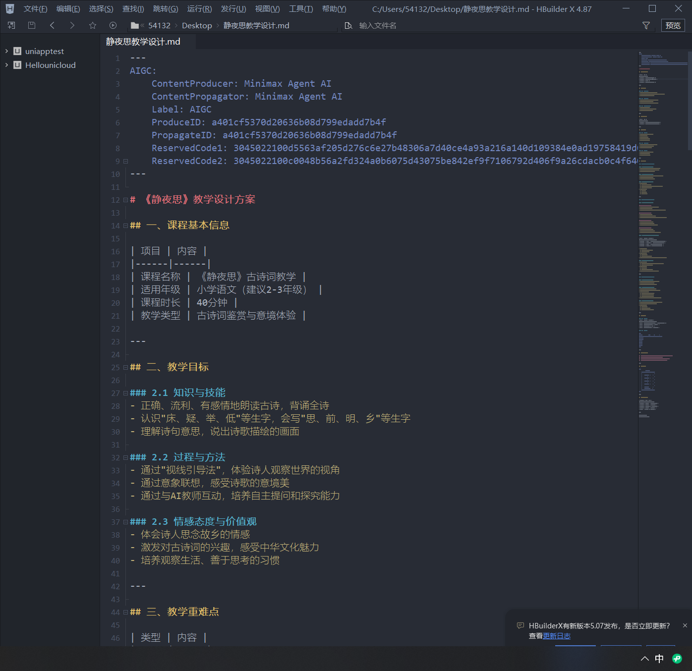
AI赋能课堂教学
小程序教具
利用微信小程序等平台，为课堂提供丰富的互动式教学工具。
核心优势
- 互动式古诗词展示，营造沉浸式学习氛围
- 水墨画风格设计，弘扬传统文化之美
- 滑动交互体验，增强学生参与感
- 随时随地可用，无需额外安装软件
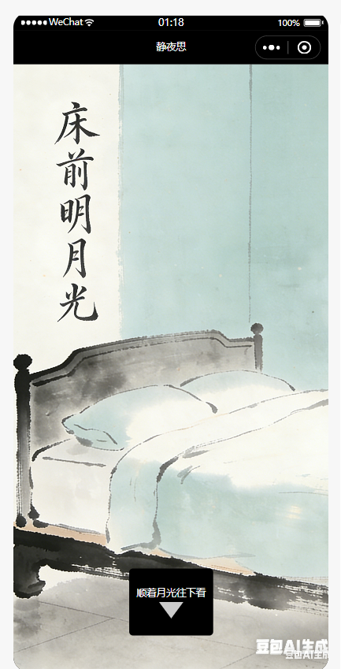
AI赋能课堂教学
教学PPT
利用AI快速生成专业的教学课件，让课堂更加生动精彩。
应用场景
- 新授课讲解
- 复习课梳理
- 公开课展示
- 个性化定制服务
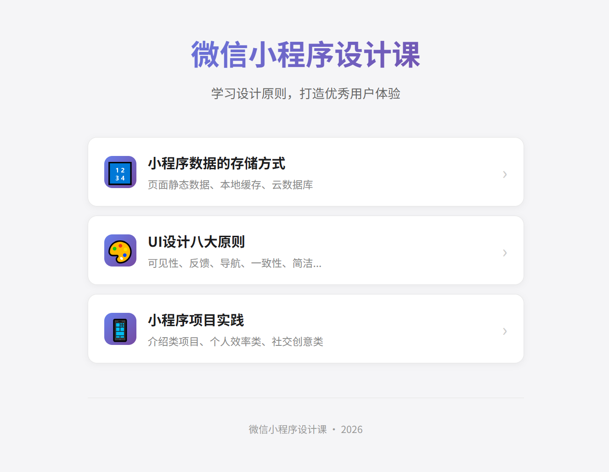
AI导师助手
作为教师的得力助手，AI导师可以为学生提供个性化的学习辅导。
核心优势
- 实时答疑解惑，随时回应学生问题
- 个性化学习辅导，满足不同学生需求
- 智能分析学情，帮助教师精准把握学态
- 全天候在线服务，不受时间和空间限制
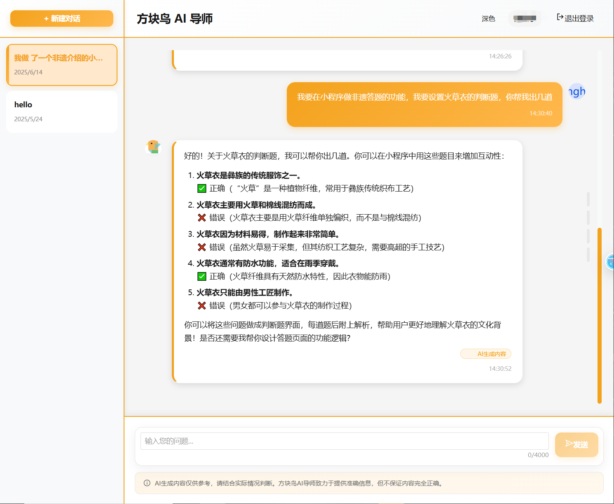
AI智能反馈
AI可以在课后持续收集学习表现，形成阶段性学习报告。
- AI自动分析学生课堂表现数据
- 生成个性化学习报告
- 智能推荐巩固练习
- 帮助教师精准把握学情
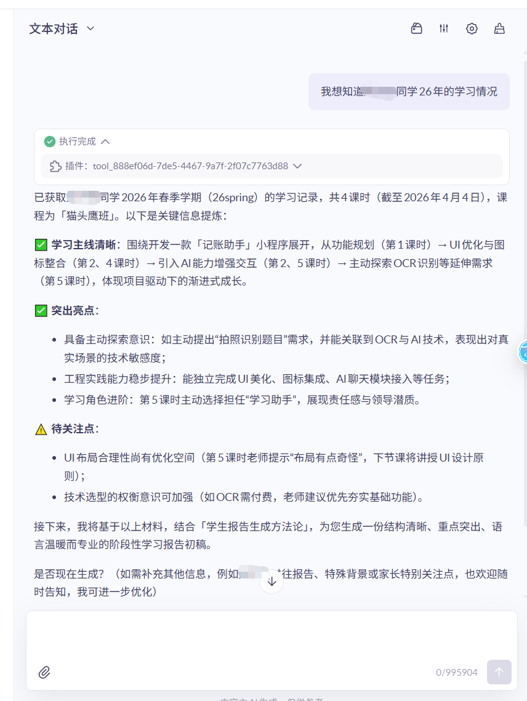
AI小程序驱动的
课堂重构
从“工具使用”走向“学习体验设计”
不要只问：
AI能做什么？
很多问题表面上是在问：AI小程序能不能提高效率？能不能个性化辅导？能不能提升内驱力？
真正更关键的问题是：老师如何用AI重新设计学习过程？
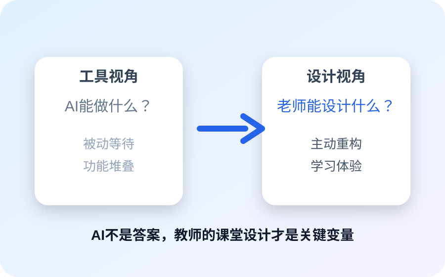
驱动力与心流
让学生愿意学、学得下去、持续投入。
学生不投入，常常不是“不想学”
- 不知道自己在干什么
- 不知道自己做得对不对
- 不知道下一步做什么
- 感受不到自己的进步
板书
而是被设计出来的
从断点学习
到流动学习
AI小程序的价值，不是讲得更多，而是让学习过程更连续。
- 学生刚做完，AI立刻反馈
- 学生卡住，AI立刻提示
- 学生完成，AI给出下一步
- 老师负责关键点拨和节奏控制
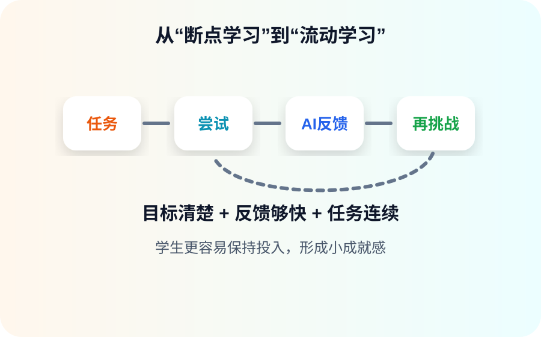
学习方式改变
与个性化学习
AI改变的不是内容本身，而是学习的组织方式。
传统课堂
一个节奏
一套讲解
一份作业
一个反馈
AI课堂
不同问题
不同练习
不同反馈
不同路径
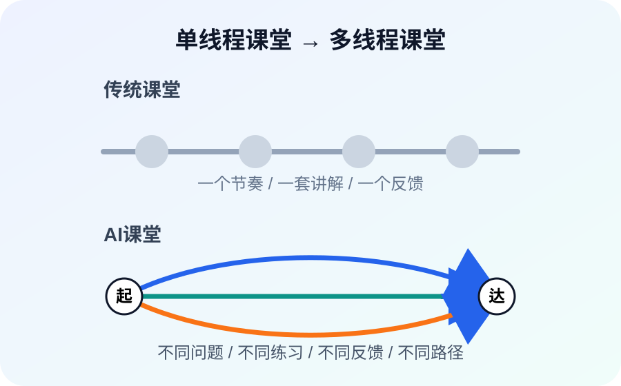
AI辅导不是
简单聊天
更好的设计是：错题诊断 → 知识点定位 → 分层讲解 → 类题练习 → 学习反馈。
AI课后辅导结构
├ 即时答疑
├ 错因分析
├ 针对练习
└ 学习反馈
李白课如何改造？
原来是“介绍李白”，AI改造后可以变成“遇见李白”。
- AI扮演李白
- 学生与李白对话
- 通过提问解锁少年、漫游、入仕、晚年
- 完成任务卡，最后由老师总结人物形象
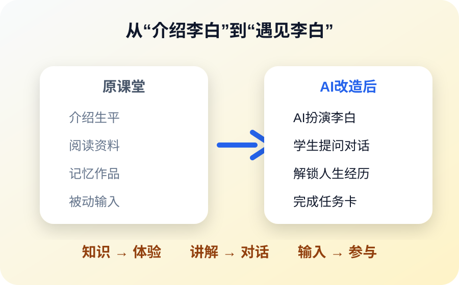
课堂角色转换
如果把这一章压缩成一张图，其实就是三个角色的变化。
- 老师：讲授者 → 设计者
- 学生：接收者 → 参与者
- AI：工具 → 助教 / 角色 / 陪练
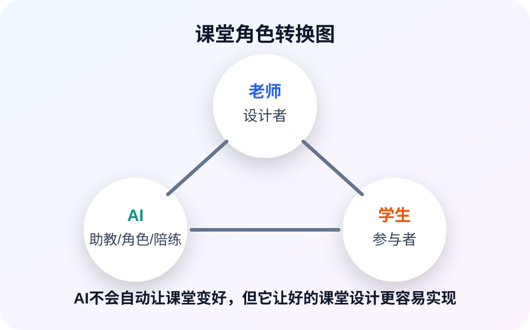
教师三步走
不用一开始就做“大而全”的AI智慧课堂，先从自己可控的环节开始。
顺序很重要：先减负，再试点，最后沉淀成资产。
先减负，
不要先炫技
目标
把时间还给教学研究和课程创作
从课程主题快速生成教学框架
按知识点、难度、题型出练习
辅助发现共性错误与典型问题
整理课堂重点、板书和复习材料
把专业反馈转化为家长能听懂的表达
小场景试点，
不要整门课重做
关键原则
再逐步扩展到整门课程
AI角色对话
AI辅助反馈
AI诊断错因
AI陪练复习
沉淀资产，
不要每次从零开始
逐步建立自己的AI工具库，包括Agent和知识库。
Agent
一个被设定好角色、任务和规则的AI助手。
知识库
老师自己的教材、教案、题库、学生常见问题库。
举例
作文点评Agent
错题诊断Agent
课堂提问Agent
提示工程与
BROKE法则
Prompt Engineering
什么是提示工程？
提示工程是指与大型语言模型进行有效交互的技术和方法体系。
应用领域
- 教学设计辅助
- 作业批改辅助
- 学情分析辅助
- 教学反思辅助
提示质量决定输出质量
大语言模型会根据用户输入，预测最可能出现的后续内容。问题越清楚，上下文越完整，输出越稳定。
清晰表达需求
提供背景信息
分解复杂任务
持续改进完善
明确性
提示应当清晰表达用户的具体需求，避免使用模糊或多义表达。
效果较差
帮我设计一些教学活动。
效果较好
请帮我设计三个针对初中二年级学生的二元一次方程教学活动，要求包括导入、讲授和练习，每个环节约10分钟。
上下文
提示中应包含足够背景信息，帮助AI理解问题的来龙去脉和具体语境。
可补充的背景信息
- 班级学生的整体水平
- 学校的教学资源条件
- 教学时间安排
- 已有学习基础
- 课堂目标和评价要求
结构化
对于复杂任务，应当将任务分解为多个明确的子任务或步骤，引导AI逐步完成。
示例流程
↓
设计教学活动
↓
生成配套练习
↓
提供评估标准
迭代优化
不要期望AI一次就给出完美答案。应把AI生成内容作为起点，通过反复对话逐步完善。
关键态度
审视、评价、反馈
再提出修改要求
教学设计辅助
基础版提示：帮我设计一节关于阅读理解的课。
优化版要补充年级、学科、时长、学生基础、教学目标和输出结构。
作业设计辅助
明确知识点范围、难度层次、题型数量和内容要求，AI才能稳定输出可用作业。
学情分析辅助
给AI具体数据，才能得到具体诊断；只说“学生不会”，AI只能泛泛而谈。
教学反思辅助
把课堂时间分配、学生反馈和困难表现告诉AI，它才能帮老师做更具体的复盘。
BROKE法则使用要点
BROKE可以作为老师写提示词时的检查清单。它不是模板的束缚，而是帮助我们把需求说完整。
讲背景
定角色
输出格式
关键信息
迭代修正
Background
讲述背景
先告诉AI这件事发生在什么教学场景里。背景越清楚，AI越不容易泛泛而谈。
可以补充什么？
- 年级、学科、课文/知识点
- 学生已有基础和常见困难
- 课时长度、课堂条件
- 本节课要解决的核心问题
Role
设定角色
角色不是为了“演戏”，而是为了让AI采用更合适的专业视角和表达方式。
角色示例
- 优秀小学语文教师
- 小学数学骨干教师
- 作文点评老师
- 错题诊断助教
- 课堂互动设计师
Output
明确输出格式
如果不规定输出格式，AI很容易输出一大段看似完整但不好直接使用的文字。
常用输出格式
分步骤流程
逐字稿
任务卡
评分标准
板书设计
Key Information
提供关键信息
把不能变的条件提前说清楚，AI才能围绕你的真实课堂来设计。
关键信息包括
- 课时：40分钟 / 2课时
- 重点：必须讲透什么
- 难点：学生最容易卡在哪里
- 资源：是否有学具、小程序、投屏
- 要求：分层、互动、评价方式
Edit
迭代修正
第一次输出只是草稿。老师要继续追问、补充、删改，让AI逐步贴近自己的课堂。
常见修正指令
更适合基础薄弱学生
增加互动提问
补充板书设计
把活动改成5分钟内完成
小学五年级语文
《四季之美》
BROKE拆解
B 背景：小学五年级语文，《四季之美》，学生学过写景类文章。
R 角色：优秀小学语文教师。
O 输出：教学目标、教学过程详案、朗读指导、语言品味点。
K 关键信息：2课时安排、第一课时扫清字词、第二课时品味语言、仿写100字。
E 修正方向：可继续要求补充作者背景，或调整问题设计贴合生活。
小学六年级数学
《圆的面积》
BROKE拆解
B 背景：六年级数学，已掌握长方形、正方形面积计算，具备小组合作经验。
R 角色：小学数学骨干教师。
O 输出：教学目标、时间分配、探究活动、问题串、公式推导、分层练习。
K 关键信息：40分钟、重点公式推导、难点πr²、4人小组、圆片剪刀等学具。
E 修正方向：可继续要求精简探究步骤，补充错题预设和应对策略。
AI正在改变的
三件事
从理念回到课堂变化
少讲“大理念”
多看“真变化”
AI时代，我们常听到很多教育观点：以学生为中心、个性化学习、人机协同。
这些都对，但如果不能落到课堂，就容易大而空。
核心问题
而在课堂到底发生了什么变化？
学习方式变了
过去是统一讲解、统一练习、统一反馈。现在学习开始分叉，每个学生的路径和节奏不再完全一致。
板书
“统一推进”
变成
“并行推进”
教师角色变了
过去老师的核心价值是讲清楚、讲完整、讲到位。AI可以解释知识、回答问题、生成例子，教师的核心价值开始转向设计学习过程。
板书
设计任务 / 控制节奏 / 抓关键点
学习支持方式变了
过去学生遇到问题，要等老师。现在学生遇到问题，可以立刻得到AI反馈。
学习支持变得随时、可重复、低成本。
板书
“稀缺资源”
变成
“随时可得”
AI没有改变
学习的本质
但它改变了三件关键事情：学习如何发生，老师如何参与，支持如何提供。
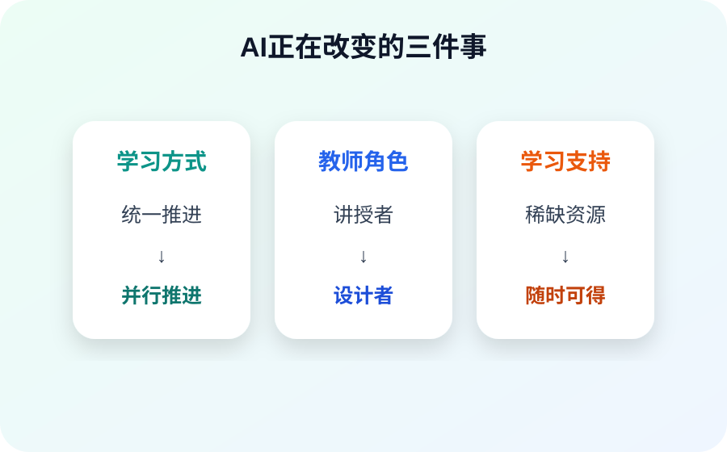
回到课堂角色
未来优秀的老师，不是最会使用AI的人，而是最会用AI设计学习体验的人。
谢谢大家
培训评价问卷